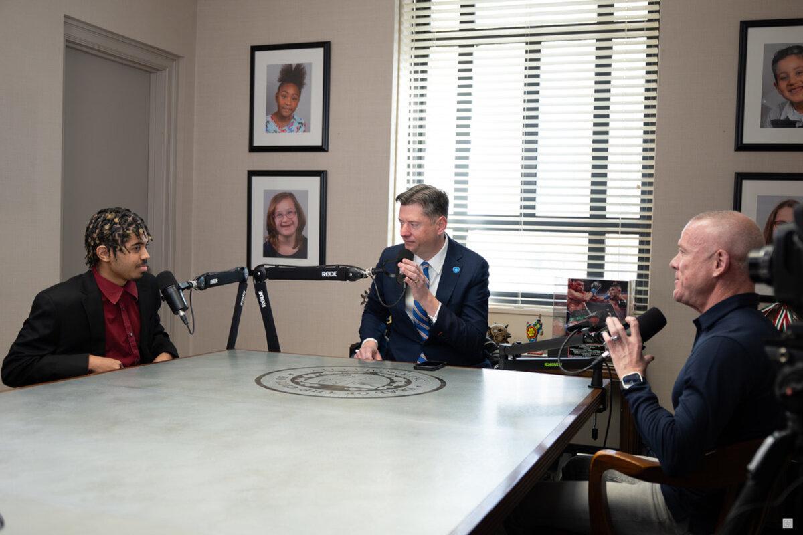
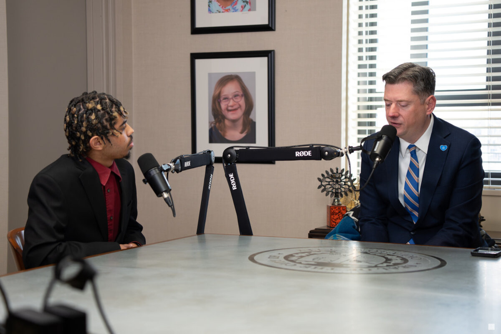
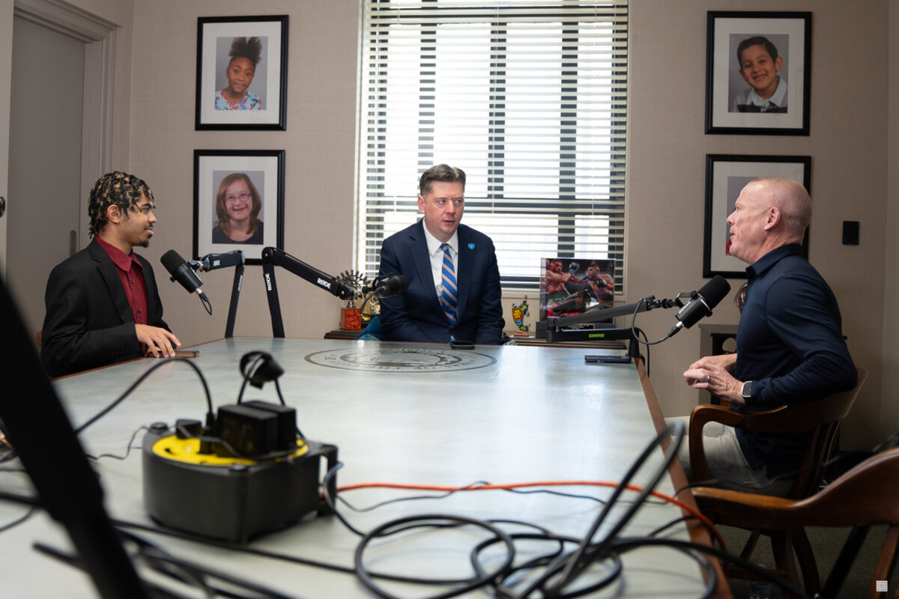

Student-produced · Oklahoma City
Stories that help us see Oklahoma City more clearly.
VOICES of OKC is a student-produced civic storytelling platform from City Center, featuring conversations with the leaders, builders, artists, advocates, entrepreneurs, and neighbors shaping the future of Oklahoma City.
Latest episode
Featured conversation
FROM POLICY TO PEOPLE: MAYOR DAVID HOLT ON LEADERSHIP, YOUTH, AND OKLAHOMA CITY
A conversation about civic leadership, long-term vision, the role of youth in shaping a city, and why productive pathways matter in Oklahoma City.
Why this matters
A civic platform, not just a podcast feed.
VOICES of OKC is more than a podcast feed. It is a civic storytelling platform where students gain real production experience while conversations with leaders help shape how our city sees itself.
Long-form video + audio
Conversations have room for context, reflection, and the details that make a story worth hearing.
Student production experience
Students learn the practical work of hosting, camera, audio, lighting, editing, and storytelling.
Civic leadership conversations
The guest list points toward people carrying responsibility for the city in public and private ways.
Local stories with dignity
Each episode is built to help Oklahoma City see its neighbors with more honesty and imagination.
Browse by theme
A growing archive of city-shaping conversations.
The archive is designed to grow beyond chronology, making it easier to find conversations by the ideas and responsibilities shaping Oklahoma City.
Civic Leadership
Public service, decision-making, and the long work of building trust.
Browse themeBusiness & Entrepreneurship
Builders, founders, and local leaders creating opportunity in Oklahoma City.
Browse themeArts & Culture
Creative voices helping the city understand itself through story, craft, and imagination.
Browse themeRestoration & Second Chances
Stories of recovery, responsibility, repair, and hope with substance.
Browse themeYouth & Family
Conversations about students, parents, mentors, and the next generation.
Browse themeFaith, Purpose & Resilience
Grounded reflections on meaning, endurance, and the choices that form a life.
Browse themeSports, Mindset & Performance
Pressure, discipline, coaching, and the habits that shape people under strain.
Browse themeCommunity Builders
Neighbors, mentors, advocates, and organizations strengthening the city from within.
Browse themeA podcast rooted in Oklahoma City.
Every city is shaped by more than buildings, policy, and headlines. It is shaped by people: by what they carry, what they build, what they survive, and what they choose to give back.
VOICES of OKC exists to hold those conversations with care, giving students real production experience while inviting the city to see itself with more honesty, dignity, and imagination.

Student production
Produced with students. Built for real growth.
VOICES of OKC is produced inside the media studio at City Center, where students and emerging creatives gain real experience in storytelling, production, leadership, and civic conversation.


Student hosts
Students are given real opportunities to host, co-host, and ask meaningful questions in live conversations.
Production experience
Camera work, audio, switching, lighting, and setup become practical skills instead of abstract ideas.
Civic access
Students engage leaders across Oklahoma City and learn how thoughtful conversations are built in real rooms.
Long-term impact
The goal is not only content. It is confidence, skill, exposure, and a stronger sense of what students can become.
Featured guests
The beginning of a real Oklahoma City archive.
Episode cards are structured around the people, themes, and questions shaping the city, so the archive can grow with intention.
Mayor David Holt · City of Oklahoma City
FROM POLICY TO PEOPLE: THE PRIVILEGE OF LEADING OKLAHOMA CITY
Leadership, youth, civic responsibility, and the long work of building a stronger Oklahoma City.
View Episode
Jordan Arnett · City Center student host
16 YEARS OLD... AND ALREADY TEACHING US ABOUT HOPE
Student-led hosting, personal story, and the kind of honesty that helps hope feel practical.
Explore Archive
Derrick Sier · Restore OKC
FROM MISNOMER TO MENTORSHIP: REBUILDING IDENTITY IN OKC
Mentorship, positive adult influence, and the community structures that help young people grow.
View Episode
Adam Coury · Leadership and learning
USE WISELY: LEADERSHIP, LEARNING, AND THE NEXT GENERATION
A grounded conversation about discernment, responsibility, and staying human in a changing world.
View Episode
Watch + listen
Wherever you are, start here.
Follow the show, watch full conversations, and stay connected as new episodes release.
PARTNER WITH STORIES THAT STRENGTHEN THE CITY.
Sponsoring VOICES of OKC helps amplify meaningful stories in Oklahoma City while investing in real production experience for students growing in skill, confidence, and opportunity.
Guest nominations
KNOW A VOICE OKLAHOMA CITY SHOULD HEAR?
Help us find leaders, builders, artists, advocates, entrepreneurs, mentors, and neighbors whose stories can help Oklahoma City see itself more clearly.